Slack Services plugin for Apache Cordova
Created by International Mix MobSlacker Plugin
Product Vision
Create Cordova plugins for iOS and Android to enable Slack services within development of any hybrid mobile application.
Key Features of the Slacker Plugin
- Authorization service
- Identity Information
- Selecting Channels
- Posting Messages
- Presence Awareness
- Advance Content sharing via Slash Commands
- An example Cordova application to demostrate the plugin's features
Who did we built this for?
Stakeholders
Mobile App Developer: Nora from Evan's Staff
needs a small lightweight plugin that allows easy integration into their app to authenticate in Slack, must have high levels of code readability and transparency and the documentation needs to be clear and logical.
Mobile Hybrid Web Developer - Ajay from Evan's Staff
needs a plugin that is platform agnostic, authentication should be fast and reliable with clear error descriptions.
Product Owner - Evan
needs something that is fast to implement, needs to have few impediments to getting a product to market and enhances the productivity of the developer team.
Feedback
Try It for Yourself
$ npm install -g cordova$ cordova create YourAppName$ cd YourAppName
$ cordova platform add {android|ios}$ cordova plugin add \
https://github.com/InternationalMixMob/CSCI-E-71_IMM_Slacker_Cordova_Plugin.git \
--variable SLACK_CLIENT_ID=xxx \
--variable SLACK_CLIENT_SECRET=xxxINSERT SIMPLE CODE TO TRIGGER LOGIN$ cordova run {android|ios}
Node.js is required to use Apache Cordova. You must also have iOS or Android development tools installed
Our Process
Agile Process/Tenants
- Sprint Backlog
- Sprint Planning
- Daily Standups
- Sprint Board Updating & Tracking
- Pairing/Mobbing
- Code Reviews
- Sprint Reviews & Retrospectives
Retrospective 1
- Good/Continue doing:
- Impressive lineup of tools
- Great documentation of all the various procesess and tools
- Review Ninja is awesome: should use it
- Start Doing:
- Focus on minimum viable
- More mob/pair sessions
- Schedule pair/mob sessions on Calendar so people can join
- More & consistant commitment from team members
- Stop Doing:
- Long term goals/experimentation
Retrospective 2
- Good/Continue doing:
- Learning new things from technical challenges
- Paired/Mob Sessions
- Always have a backup when presenting
- Start Doing:
- Better sharing of knowledge between members
- Integration testing
- Focus on making all the existing code rock solid
- Focus on polishing
- Nice presentation with Reveal.js or Prezi for final
- Stop Doing:
- Lack of participation
- Difficult to keep track of all the layers
- Need to highlight the complexity of CI board and explain its nuances
- Consider consolidating the 2 teams
- Demo could look better - use mockups if necessary
How it comes together
- Architectual Context
- Coding
- Tests & Code Coverage
- Automation
- Continous Delivery
Architectual Context
Significant Components
Slacker Client
needs a small lightweight plugin that allows easy integration into their app to authenticate in Slack, must have high levels of code readability and transparency and the documentation needs to be clear and logical.
Slacker Cordova Plugin
needs a small lightweight plugin that allows easy integration into their app to authenticate in Slack, must have high levels of code readability and transparency and the documentation needs to be clear and logical.
Slacker Reference Application
needs a small lightweight plugin that allows easy integration into their app to authenticate in Slack, must have high levels of code readability and transparency and the documentation needs to be clear and logical.
Significant Dependencies
Slack API
needs a small lightweight plugin that allows easy integration into their app to authenticate in Slack, must have high levels of code readability and transparency and the documentation needs to be clear and logical.
Cordova Framework
needs a small lightweight plugin that allows easy integration into their app to authenticate in Slack, must have high levels of code readability and transparency and the documentation needs to be clear and logical.
Code
GitHub - International Mix Mob organization
- 7 Repositories
- XXXX Lines of Code
- XX Pull Requests
- 8 Languages:
Java, Objective-C, JavaScript, HTML, Ruby, Groovy, YML, & Shell scripting
Tests
- 15 unit test for Slacker Client for Android
- 11 unit test for Slacker Client for iOS
- 14 unit test for Slacker Plugin
- 5 integration test for Slacker Plugin
- Total Test: 45
Android Tests
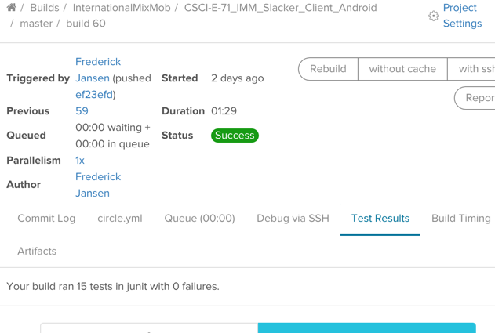Running from Circle-CI
Android Test Report
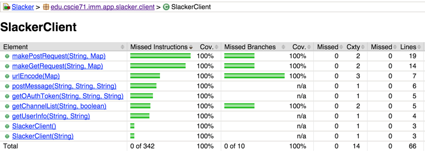Test Output
iOS Tests
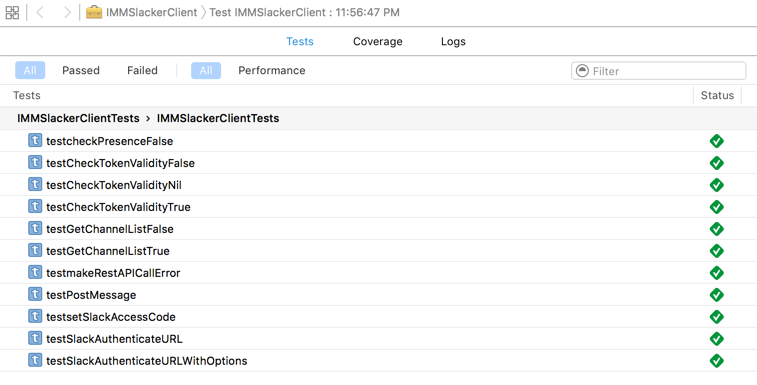Plugin Tests
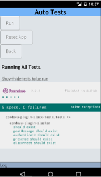Code Coverage Dashboard
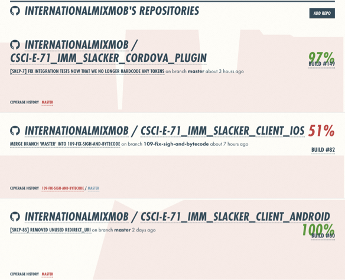Slacker Cordova Plugin - Code Coverage
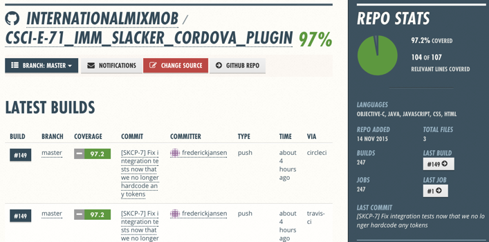Other Components Code Coverage
- Slacker Client - Android

- Slacker Client - iOS**

- Slacker Cordova Plugin

- Slacker Reference App - iOS & Andriod
iOS Code Coverage in Xcode
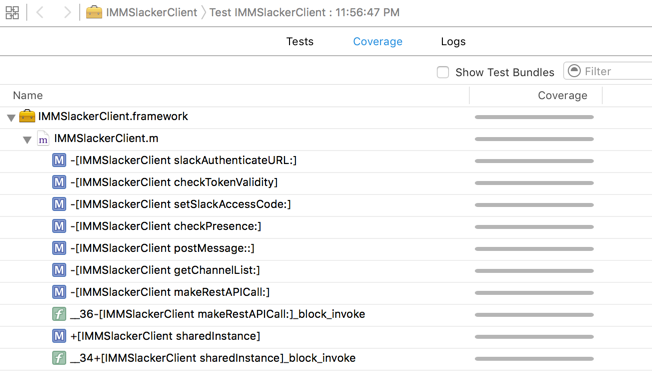Xcode Code Coverage reports 100%
We strived for universal code coverage dashboard, but found challenges unifiying 3 languages tools
Automation
Continous Delivery
|
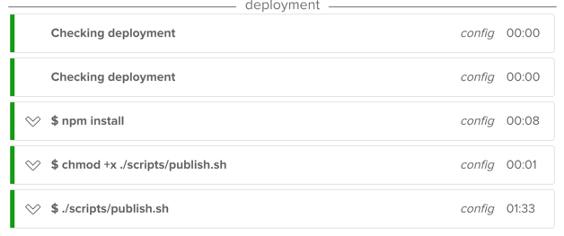
Publishing the Android App to Hockey App via Circle-CI |

Publishing the iOS App to Hockey App via Travis-CI or Desktop |
Continous Delivery from the Device
| 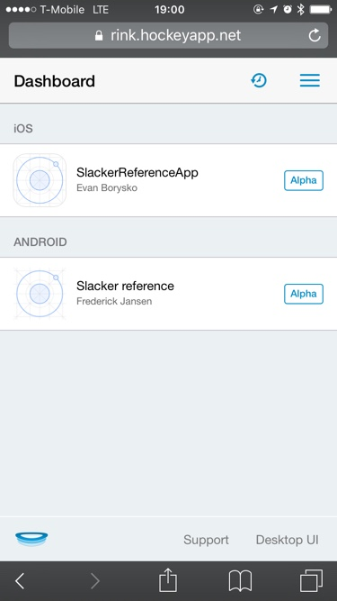 | 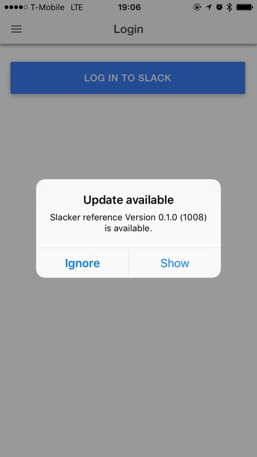 | 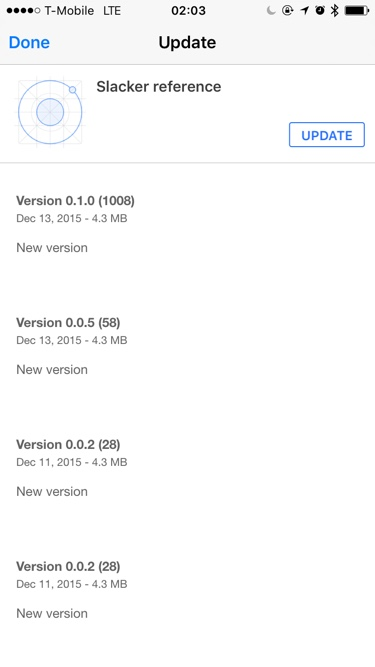 |
InternationalMixMob Team Members
- Cornell Wright, iOS Developer
- Alpana Barua, Scrum Master & part-time iOS Developer
- Jeffry Pincus, Android Developer
- Frederick Jansen, Android, Hybrid Developer & DevOps
- Manoj Shenoy, iOS Developer
- Justin Sanford, Android & Hybrid Developer
Evan Borysko, Product Owner, part-time iOS/Hybrid Developer, & DevOps
Scrum Master: Alpana Barua
Tools
|
|
Key Learnings
Top 3 Positives
- Introduced to Cordova framework, for apps and plugins along with many other tools.
- It's better to get something working than to struggle trying to do things by the book. The time saved by not struggling can be used to revisit the task later when the mind is clear.
- Detailed documentation of all the tools and processes.
Key Learnings
Top 3 Deltas
- Project consisted of many layers; wasn't sure how the different parts would work together until Sprint 2.
- Communication was challenging with a large group of busy people spread across the country.
- Getting continuous integration working across all our repos for iOS and Android was a herculian task.
Questions
Oh, and One More Thing...
a live demo?